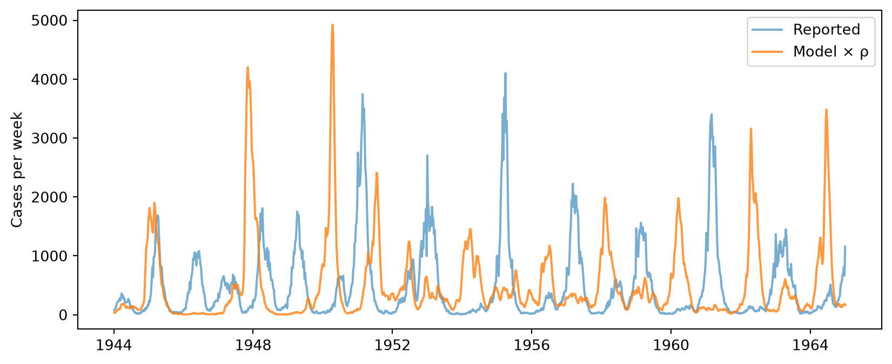

import numpy as np
import pandas as pd
import matplotlib.pyplot as plt
import scipy.stats as sps
import sciris as sc
import starsim as ss
pars = sc.obj(
R0=56.8, sigma=28.9/365.25, gamma=30.4/365.25, mu=0.02/365.25, # Latent and infectious periods of about 12 days; deaths per day
alpha=0.976, iota=2.9, sigma_se=0.0878, # Mixing, imported infections, and the noise
amplitude=0.554, cohort=0.557, # School terms, and the share of births entering at school start
rho=0.488, psi=0.116, # Reporting
s0=0.0297, e0=5.17e-5, i0=5.14e-5, # Starting shares
)
start = ss.date('1943-12-31')
stop = start + ss.days(7*1096) # 1,096 weeks of data
terms = [(7, 100), (115, 199), (252, 300), (308, 356)] # School terms, in days of the year
census = pd.read_csv('../tutorials/data/he2010_london_covariates.tsv', sep='\t') # Days from 1944-01-07; the birth rate is per person per year, lagged four years
cases = pd.read_csv('../tutorials/data/he2010_london_cases.tsv', sep='\t') # Days from the start
data = pd.DataFrame(dict(recovery=cases.weekly_cases.values), index=[start + ss.days(int(t)) for t in cases.time])
def year(date):
""" The time as He et al. count it: the year, plus the day of the year over 365.25 """
return date.year + date.dayofyear/365.25
census_years = year(ss.date('1944-01-07')) + census.t.values/365.25
def lookup(column, date):
""" The census value in force at a date (each month's value holds until the next) """
i = np.searchsorted(census_years, year(date), side='right') - 1
return census[column].values[max(i, 0)]Measles in London, four ways
Starsim declares most models in a few lines: states, transitions, rates, and the data to fit them to. Sooner or later, though, a model needs something none of these say. This page takes one such model, the measles model of He, Ionides and King (2010), and fits it into Starsim in four ways, each a small step from the last:
- Declared, with a little code: the states and transitions declared as usual, with functions of the sim and a small module for what they can’t say.
- A likelihood of your own, as a function, for data the built-in likelihoods don’t describe.
- Written as code: the whole model as one module, with nothing declared, which can do anything.
- Compiled: the loop at the heart of that module, made fast with
@ss.jit.
None of these needs anything added to Starsim. Each gives up a little of what Starsim knows about the model in return for freedom.
The model
He et al. fitted a stochastic SEIR model to the weekly measles cases reported in London from 1944 to 1965. It is the classic test of methods for fitting stochastic models, and it has four features that Starsim’s declarations don’t have words for:
- Noise on the rate of infection. Besides the chance of who is infected each day, the force of infection itself varies at random from day to day (“extra-demographic” noise, gamma-distributed with variance σ²).
- Births that enter school together. Most children (55.7%) enter the susceptible pool all at once, on the day school starts in September; the rest enter through the year. The birth rate and the population follow the census.
- School terms. Transmission is higher during the four school terms than in the holidays.
- A measurement model whose spread grows with the cases. Each week’s reported cases are normal, with mean ρC and variance ρC(1 − ρ + ψ²ρC), where C is the number who recovered that week.
The parameters are those the paper estimated. The census and the cases are two small tables:
1. Declared, with a little code
The states, transitions and deaths are declared as usual. What they can’t say is written as functions of the sim, which Starsim calls once a step: the force of infection, which reads the calendar for the school terms, and the births, which on day 251 of the year include the cohort entering school. The noise is a value that changes each step, so it is a few lines of a connector, whose step() draws it before the diseases run; the force of infection reads it.
class Noise(ss.Connector):
""" Gamma noise on the force of infection, with mean 1, drawn once a step """
def __init__(self, sigma_se):
super().__init__(name='noise')
self.var = sigma_se**2*365.25 # The variance of a day's noise
self.value = 1.0
def init_post(self):
super().init_post()
self.rng = np.random.default_rng(self.sim.pars.rand_seed)
def step(self):
self.value = self.rng.gamma(1/self.var, self.var)
def force(sim):
""" The force of infection: school terms, mixing that rises a little more slowly than the number infectious, and the noise """
doy = sim.now.dayofyear
school = any(lo <= doy <= hi for lo,hi in terms)
seas = 1 + pars.amplitude*0.2411/0.7589 if school else 1 - pars.amplitude # The same mean over the year
beta = pars.R0*seas*(1 - np.exp(-(pars.gamma + pars.mu)))
I = sim.diseases.measles.I.n
return ss.perday(beta*(I + pars.iota)**pars.alpha/lookup('pop', sim.now)*sim.connectors.noise.value)
def births(sim):
""" Births per day; on day 251, also the cohort of the year's births entering school """
yearly = lookup('pop', sim.now)*lookup('birthrate', sim.now)
entry = sim.now.dayofyear == 251
return ss.perday(yearly*((1 - pars.cohort)/365.25 + pars.cohort*entry))
def make_measles():
S, E, I, R = ss.states('S E I R')
N0 = lookup('pop', start)
return ss.Disease(
infection = S >> E @ force,
latency = E >> I @ ss.perday(pars.sigma),
recovery = I >> R @ ss.perday(pars.gamma),
births = ss.null >> S @ births,
deaths = ss.death(rate=ss.perday(pars.mu)),
init_n = dict(S=round(pars.s0*N0), E=round(pars.e0*N0), I=round(pars.i0*N0)),
name = 'measles',
)
sim = ss.Sim(make_measles(), connectors=Noise(pars.sigma_se), solver='binomial', total_pop=lookup('pop', start),
start=start, stop=stop, dt=ss.days(1), data=data)
sim.run()Sim: measles, 2,464,805 people, as a stochastic compartmental model (chain binomial), 1943-12-31 to 1965-01-01
Note: the initial value of S in "measles" is kept, and the other 2,391,346 people start in R, the only state not given one Done in 16.6 sSim(n=2464804; 1943-12-31—1965-01-01; diseases=measles; connectors=noise)The model runs as a chain binomial, a stochastic compartmental model, since nothing in it is about individual people. To compare it with the data, the weekly recoveries are scaled by the reporting rate ρ:
weekly = sim.results.measles.recovery.values[1:].reshape(-1, 7).sum(axis=1) # Days 1-7, 8-14, ..., as the data are
plt.figure(figsize=(10, 4))
plt.plot(data.index, data.recovery, label='Reported', alpha=0.6)
plt.plot(data.index, pars.rho*weekly, label='Model × ρ', alpha=0.8)
plt.ylabel('Cases per week')
plt.legend()
The model’s epidemics come every other year, as London’s did, though not always in the same years: a stochastic model’s timing drifts from the data’s unless it is filtered, as in step 5. describe() shows everything that is declared, and says what is code:
sim.describe()Sim 2 modules, 2,464,805 people, 1943-12-31 to 1965-01-01
| solver | binomial | requested |
| auto would choose: ode (every part of the model has a compartmental form) | ||
| unit | day | from the typed values in the model |
Disease 'measles' 4 states, 5 transitions
| states | S, E, I, R | |
| infected: E, I, R | counted in prevalence, and cured by ss.treat | |
| init: S = 73205 people, E = 127 people, I = 127 people; the rest in R | guessed: R, the only state with no initial value, since S has one | |
| infection | S -> E spontaneous, an acquisition | guessed: acquisition: out of S |
| time in S ~ exponential(rate = force) | ||
| latency | E -> I spontaneous | |
| time in E ~ exponential(rate = 0.0791239 per day) | ||
| recovery | I -> R spontaneous | |
| time in I ~ exponential(rate = 0.0832307 per day) | ||
| births | (added) -> S inflow, in total per day | |
| rate = births | ||
| deaths | S | E | I | R -> (removed) spontaneous | |
| time in S | E | I | R ~ exponential(rate = 5.4757e-05 per day) |
Results and running
| results | S, E, I, R, and one flow per transition | |
| schedule | every day: noise, measles |
Notes
| note | unit='day' (from the typed values in the model) | |
| note | the initial value of S in "measles" is kept, and the other 2,391,346 people start in R, the only state not given one |
What this costs: the functions run in Python once a step, so the run is taken a step at a time (a few seconds) rather than in one compiled call; and Starsim’s own particle filter, which runs many copies of the kernels at once, can’t take a connector, since each copy would need noise of its own. Everything declared still prints, and the run’s results are ordinary results.
2. A likelihood of your own
He et al.’s measurement model is a normal whose variance grows with the mean, which isn’t one of Starsim’s likelihoods. Any likelihood can be given as a function of the data and the model’s values, returning the log-likelihood of each. Here, as in the paper, it is the chance of the reported number rounded to a whole case:
def reported(observed, recovered):
""" The log-likelihood of the reported cases, given the recoveries """
m = pars.rho*recovered
sd = np.sqrt(m*(1 - pars.rho + pars.psi**2*m)) + 1e-18
lik = np.where(observed > 0, sps.norm.cdf(observed + 0.5, m, sd) - sps.norm.cdf(observed - 0.5, m, sd), sps.norm.cdf(0.5, m, sd))
return np.log(lik + 1e-18)
ss.fit.loglik(sim, likelihood=dict(recovery=reported))-31485.821261718982The function can be given wherever a distribution is: on an outcome (ss.outcome(..., likelihood=reported)), to sim.fit(likelihood=...), and to the particle filter. For a single stochastic run, the log-likelihood is low, since its epidemics are not in step with the data; a particle filter (step 5) measures the fit properly.
3. Written as code
The most direct way is to write the model as one module, in NumPy, with nothing declared. This is He et al.’s own algorithm, line for line (an Euler-multinomial step each day). Its states are arrays with one value for each of n runs, so one sim can also run many copies of the model at once:
class He2010(ss.Module):
""" He et al.'s model, as code: n copies of S, E, I and R, advanced each day by the function euler """
def __init__(self, n=1, euler=None):
super().__init__(name='he2010')
self.n = n
self.euler = euler
def init_post(self):
super().init_post()
self.rng = np.random.default_rng(self.sim.pars.rand_seed)
N0 = lookup('pop', self.sim.t.start)
self.S, self.E, self.I = [np.full(self.n, np.round(N0*x)) for x in [pars.s0, pars.e0, pars.i0]]
self.C = np.zeros(self.n) # Recoveries in the last step
self.recoveries = []
def step(self):
p, now = pars, self.now
pop = lookup('pop', now)
yearly = pop*lookup('birthrate', now)
births = np.round(yearly*((1 - p.cohort)/365.25 + p.cohort*(now.dayofyear == 251)))
seas = 1 + p.amplitude*0.2411/0.7589 if any(lo <= now.dayofyear <= hi for lo,hi in terms) else 1 - p.amplitude
beta = p.R0*seas*(1 - np.exp(-(p.gamma + p.mu)))
var = p.sigma_se**2*365.25
noise = self.rng.gamma(1/var, var, self.n)
rates = (p.iota, p.alpha, p.sigma, p.gamma, p.mu)
self.C = self.euler(self.S, self.E, self.I, beta, pop, births, noise, self.rng, rates)
self.recoveries.append(self.C.mean())
def euler_step(S, E, I, beta, pop, births, noise, rng, rates):
""" One day for each copy: who leaves S, E and I, and where to (the rest die) """
iota, alpha, sigma, gamma, mu = rates
foi = beta*(I + iota)**alpha/pop*noise
out = []
for n,rate in [(S, foi), (E, sigma), (I, gamma)]:
leaving = rng.binomial(n.astype(np.int64), 1 - np.exp(-(rate + mu)))
out.append((rng.binomial(leaving, rate/(rate + mu)), leaving))
(inf, nS), (lat, nE), (rec, nI) = out
S += births - nS
E += inf - nE
I += lat - nI
return rec
def make_coded(n=1, euler=euler_step, **kwargs):
return ss.Sim(modules=He2010(n, euler), start=start, stop=stop, dt=ss.days(1), verbose=0, **kwargs)
sims = ss.parallel([make_coded(rand_seed=seed) for seed in range(6)]).sims
totals = [pars.rho*np.sum(s.custom.he2010.recoveries) for s in sims]
print(f'Reported cases over 21 years: {np.mean(totals):,.0f} ± {np.std(totals):,.0f}')Reported cases over 21 years: 539,534 ± 7,494The module keeps nothing for each person, so the sim has no agents: Starsim runs it as it is, calling its step() once a day and nothing else. (A module that keeps a value for each person, with define_states(), runs as agents instead.) Starsim still gives it the dates, seeds, parallel runs, and anything else it asks of the sim; what it can’t do is show what the module does (describe() lists it by name only), run it under another solver, or fit it with sim.fit(), since there is nothing declared to fit.
4. Compiled
@ss.jit compiles a function with Numba, with no change to what it does. The step above is written for whole arrays, so here it is again as a loop over the copies, which Numba makes fast:
@ss.jit
def euler_loop(S, E, I, beta, pop, births, noise, rng, rates):
""" The same as euler_step(), one copy at a time """
iota, alpha, sigma, gamma, mu = rates
rec = np.zeros(len(S))
for i in range(len(S)):
foi = beta*(I[i] + iota)**alpha/pop*noise[i]
nS = rng.binomial(int(S[i]), 1 - np.exp(-(foi + mu)))
nE = rng.binomial(int(E[i]), 1 - np.exp(-(sigma + mu)))
nI = rng.binomial(int(I[i]), 1 - np.exp(-(gamma + mu)))
inf = rng.binomial(nS, foi/(foi + mu))
lat = rng.binomial(nE, sigma/(sigma + mu))
rec[i] = rng.binomial(nI, gamma/(gamma + mu))
S[i] += births - nS
E[i] += inf - nE
I[i] += lat - nI
return rec
make_coded(euler=euler_loop).run() # The first run compiles it
for label,euler in [('NumPy', euler_step), ('Compiled', euler_loop)]:
T = sc.timer()
make_coded(euler=euler).run()
T.toc(f'One run, {label}') Compiling euler_loop() with Numba, estimated time: 1-10 s
One run, NumPy: 1.59 s
One run, Compiled: 1.51 sThe first call compiles it, which takes a few seconds once; after that it is loaded from Numba’s cache. Compiling pays off most for loops that NumPy can’t write as whole arrays. For this model, most of the time of a large run is the random draws themselves. A function that Numba can’t compile (e.g. one that calls Sciris) is an error, which says why; @ss.jit(nopython=False) runs it as Python instead, with a note.
5. A particle filter
The coded model’s copies can be the particles of a filter. At the end of each week, an analyzer weights each copy by how likely that week’s reported cases are under it (the reported() likelihood from step 2), and then draws the copies again in proportion to their weights, so that those that have drifted from the data are dropped. The mean weight, multiplied over the weeks, estimates the likelihood of the data:
class Filter(ss.Analyzer):
""" A bootstrap particle filter over the copies of He2010 """
def __init__(self, observed):
super().__init__(name='pfilter')
self.observed = observed
self.loglik = 0.0
def init_post(self):
super().init_post()
self.model = self.sim.custom.he2010
self.week = np.zeros(self.model.n)
self.rng = np.random.default_rng(self.sim.pars.rand_seed + 1)
def step(self):
if self.ti == 0: # Analyzers also run at the start, before the first step
return
self.week += self.model.C
if self.ti % 7:
return
weights = np.exp(reported(self.observed[self.ti//7 - 1], self.week))
self.loglik += np.log(weights.mean())
n = len(weights)
chosen = np.searchsorted(np.cumsum(weights/weights.sum()), (self.rng.random() + np.arange(n))/n).clip(max=n - 1)
for key in ['S', 'E', 'I']:
setattr(self.model, key, getattr(self.model, key)[chosen])
self.week[:] = 0
sim = make_coded(n=500, euler=euler_loop, analyzers=Filter(data.recovery.values)).run()
print(f'Log-likelihood: {sim.analyzers.pfilter.loglik:,.1f}')Log-likelihood: -5,812.2With 2,000 particles, ten such filters give −5,819 ± 14, against −5,827 ± 13 from pomp, the R package He et al. used; fewer particles give a lower and noisier estimate. A filter like this is the basis of fitting a stochastic model: estimate the likelihood at many parameter values and keep the best (IF2 and particle MCMC are refinements of the same idea).
Which to use
| What you write | What Starsim still does | What is given up | |
|---|---|---|---|
| Declared, with a little code | Functions of the sim; a connector for a value that changes each step | describe(), results, solvers that can take the code, outcomes and likelihoods |
Speed (a step at a time), and the built-in particle filter for code that draws random numbers |
| A likelihood of your own | fn(observed, model) |
Fitting, including the particle filter for declared models | Gradients of NUTS in JAX, which falls back to Python |
| Written as code | A module with step() |
Time, seeds, parallel runs, results you record | Everything about the model’s structure: describe(), other solvers, sim.fit() |
| Compiled | @ss.jit on a function |
The same | Some of Python: the function must be one Numba can compile |
Start declared, and move down the table only for the part that needs it. Here, the declared model with a connector and two functions said almost everything, and only fitting with the noise needed the model as code.
Going further
- Custom modules and A5 – Custom modules teach writing modules as code, as compartments and as agents.
- Custom modules in the user guide covers the options, including
@ss.jit; Fitting a model covers likelihoods and the particle filter. - He D, Ionides EL, King AA (2010). Plug-and-play inference for disease dynamics: measles in large and small populations as a case study. Journal of the Royal Society Interface 7: 271–283.
- pomp: measles in England and Wales, the same model fitted with the R package pomp.